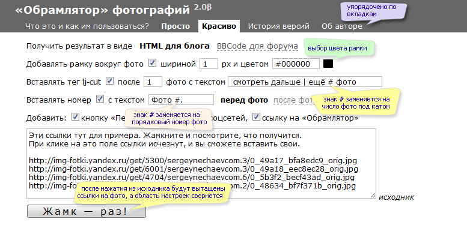
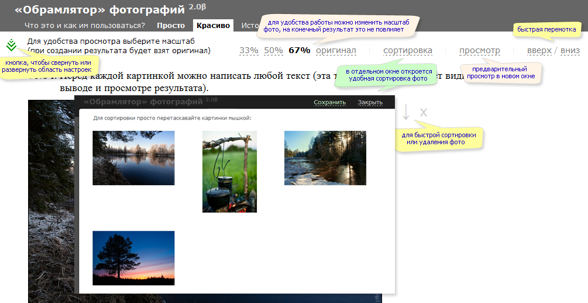
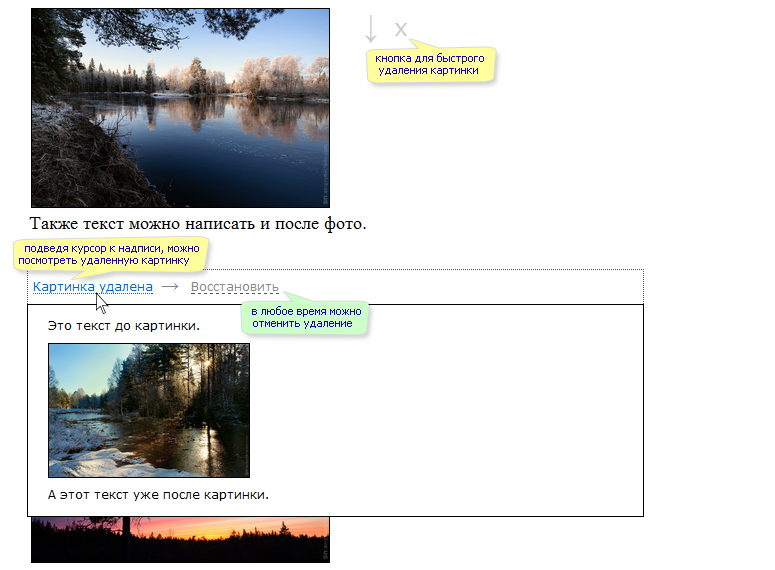
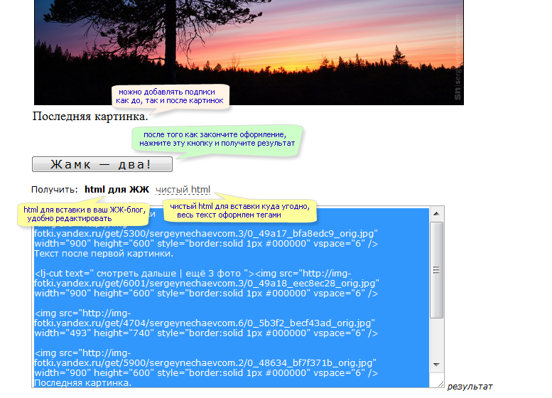

Например, нужно вставить в блог или на форум сразу несколько фотографий, пронумеровать и красиво
подписать их. Скормите «Обрамлятору» ссылки на ваши фотографии, он их проанализирует и сформирует
по вашим настройкам новый результат. Сами картинки могут находиться где угодно — на вашем хостинге,
либо на любом популярном фотохостинге.
Вставляемые ссылки на фото могут быть разделены чем угодно:
запятыми, пробелами, новыми строками, другими словами и т.п.
Для начала поместите в поле «исходник» текст, содержащий ссылки на ваши фотографии,
сделайте необходимые настройки и нажмите кнопку «Жамк — раз!»:

Область настроек автоматически свернется, и можно будет добавлять текст до или после картинок.
Доступна удобная сортировка фотографий, которая открывается в отдельном окне, а также предварительный просмотр:

При необходимости можно удалить картинки. Подведя курсор к надписи «Картинка удалена», можно посмотреть
удаленную картинку. Также есть возможность восстановить удаленную картинку обратно:

Внизу, после всех картинок, нужно будет нажать кнопку «Жамк — два!» и получить результат. По умолчанию
предлагается вариант html-кода для вставки в ЖЖ-блог, его удобно редактировать. В чистом html весь
текст оформлен тегами, этот код можно вставлять на любую веб-страницу:

Список всех возможностей «Обрамлятора»:
— формирование html для блога или bb-кодов для форума,
— добавление рамки вокруг фото любой толщины и цвета,
— вставка тега lj-cut с произвольным текстом после любой картинки,
— нумерация фотографий, номер ставится до или после картинки,
— добавление произвольного текста до и после фото,
— определение и прописывание в результате ширины и высоты картинок,
— удобное добавление, удаление и сортировка картинок «на лету»,
— добавление в ЖЖ-пост кнопки перепоста и «лайков» соцсетей,
— предварительный просмотр результата в отдельном окне браузера.
2.2 β, в процессе разработки
— включены по умолчанию "лайки" соцсетей.
— убрана отдельная галочка "добавить кнопку "перепост", теперь он совмещен с "лайками" соцсетей.
2.1 β, 29 февраля 2012 г.
— появилась возможность добавления картинок уже в процессе редактирования, существующие
картинки и подписи к ним остаются.
— после изменения настроек можно обновить область редактирования картинок.
— изменен формат вывода результата, по умолчанию используется вывод с минимумом тегов
для постинга в ЖЖ, отдельно можно получить чистый html-код.
— добавлено удаление картинок с возможностью их просмотра и восстановления обратно.
— добавлена поддержка ката для других систем, вместе с тегом lj-cut добавляется тег cut и комментарий more.
— добавлена защита от случайного обновления или закрытия страницы с «Обрамлятором».
— все внешние ссылки открываются в новом окне — дополнительная защита от случайного ухода со страницы.
— исправлена ошибка формирования результата для постинга в ЖЖ, не добавлялся параметр vspace,
если не была задана рамка вокруг фото.
— исправлена ошибка, могущая привести к зависанию js-скрипта при редактировании большого числа фото.
— исправлена ошибка, когда после предварительного просмотра стирался текст-справка у первой картинки.
— исправлена ошибка формирования текста lj-cut'a в случае, если задается знак двойной решетки ##.
— исправлена ошибка вывода номера фото, теперь если вообще на задана #, то номер не будет добавлен.
— исправлена ошибка вывода номера фото в случае, если задается знак двойной решетки ##.
— сделаны ссылки на предыдущие версии «Обрамлятора».
— оптимизирован код, улучшено быстродействие.
2.0 β, 7 февраля 2012 г.
— добавлен модуль сортировки картинок путем их перетаскивания мышкой в любой
последовательности, модуль открывается в новом окне.
— добавлен модуль предварительного просмотра результата в отдельном окне браузера.
— изменено оформление и алгоритм вставки номера до и после картинки.
— номера по умолчанию теперь вставляются перед фото (раньше было после фото).
— добавлена возможность добавлять в результат кнопку перепоста и ссылки на соцсети в ЖЖ.
— изменен алгоритм парсинга исходных ссылок, добавлена возможность использовать для картинок
фотохостинг самого ЖЖ (спасибо Артему Кривополенову).
— область настроек можно сворачивать для освобождения пространства и разворачивать при необходимости.
— добавлена защита от случайного повторного нажатия кнопки «Жамк-раз».
— увеличен шрифт для удобства редактирования текста до и после картинок.
— исправлена ошибка при формировании bb-кодов (добавлялся html тег br).
— добавлены кнопки для быстрой перемотки в начало и в конец списка картинок.
— исправлена некорректная работа кнопки «Жамк - два», не перечитывались настройки.
— в разделе «Красиво» область настроек автоматически сворачивается после загрузки картинок («Жамк - раз»).
— текст до и после картинки теперь имеет одинаковый по умолчанию размер.
— оптимизирован алгоритм автоматического расширения области текста над и под картинкой.
— переделан справочный раздел.
— изменен текст lj-cut'а по умолчанию.
1.0 β, 15 февраля 2011 г.
— исправлена ошибка распознавания ссылок на картинку в случае кириллического домена .рф.
— номер фото можно добавлять как до, так и после картинки.
— убрано добавление текста с номером фото в свойства alt и title тега img.
— в разделе «Красиво» добавлена сортировка фото.
— в тег lj-cut автоматически добавляется число картинок для просмотра под катом.
— текст до и после фото, номера фото, сами картинки обрамляются в тег p с правильно проставленными
интервалами между абзацами.
— при оформлении фото через раздел «Красиво» высчитывается высота и ширина картинки и
прописывается в теге img.
— появилась возможность добавлять текст до и после фото.
— сделано разделение функционала на «Просто» и «Красиво».
— добавлены меню-вкладки вверху страницы, все несущественные элементы вынесены на скрытые вкладки.
— существенно изменен интерфейс.
0.3 β, 3 января 2011 г.
— добавлен визуальный элемент для выбора цвета рамки.
— в исходик теперь можно вставлять ссылки на изображения в любом формате, в т.ч. внутри тегов,
обработаны будут только ссылки, содержащие картинки.
— добавлена возможность получения результата в формате BBCodes для использования на форумах.
— при желании в результат можно добавить ссылку на «Обрамлятор».
— проведен рефакторинг кода.
— доработка интерфейса.
0.2 β, 25 декабря 2010 г.
— добавлена возможность нумеровать фотографии, текст с номером вставляется
как перед фото, так и в свойства alt и title тега img.
— оптимизирован алгоритм поиска ссылок на фото в исходнике,
теперь не надо указывать номер строки, с которого начинаются ссылки,
а сами ссылки могут быть разделены чем угодно (спасибо Артему Кривополенову).
— исправлена некорректная работа в *nix-системах (обрезалось расширение файла).
— доработка мелких багов в интерфейсе.
0.1 β, 24 декабря 2010 г.
— первая версия, «на коленке» за часок. Тем не менее, умеет все самое важное.
Меня зовут Сергей Нечаев и изначально я написал «Обрамлятор» для личного использования
в своем ЖЖ — http://dert.livejournal.com
«Обрамлятор» — бесплатная программа и без рекламы. Вы можете совершенно свободно
использовать его для своих нужд. Если просто желаете сказать мне спасибо, включайте ссылку
на «Обрамлятор» в ваши посты, для этого есть специальная галочка :)
Но, конечно, я буду безумно рад, если вы захотите отблагодарить меня чем-то более материальным,
чем просто «спасибо». Особенно, если «Обрамлятор» здорово экономит ваше время (а я уверен, что
это так). К счастью, в Интернете давно придумали способ добровольных пожертвований — donations.
Вы можете перевести любую сумму — хоть рубль, хоть сто, хоть тысячу, мне будет приятно
уже от одного факта вашего внимания.
Сделать добровольный взнос на поддержку и развитие «Обрамлятора» можно:
— через Яндекс-Деньги на кошелек 410011305811910:
— через WebMoney на рублевый R291529646763 или долларовый Z343271744155 кошельки.
— через QIWI кошелек на номер +7 9212990106.
— через PayPal на мой адрес snechayev@gmail.com.
Об ошибках или идеях для «Обрамлятора» пишите в любой из этих постов в моем ЖЖ:
http://dert.livejournal.com/tag/обрамлятор